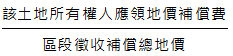

主題精選：區段徵收¶
共收錄 19 篇文章。
1. 三七五耕地因市地重劃及區段徵收而終止租約或註銷租約¶
發布日期: 2026-03-12
內文¶
所謂終止租約，指業佃雙方合意而終止三七五租約。所謂註銷租約，指由政府介入而註銷三七五租約，屬於直轄市或縣（市）政府之行政處分。
• (一) 市地重劃：
- 註銷租約： (1)註銷時機：出租之公、私有耕地因實施市地重劃致不能達到原租賃之目的者，由直轄市或縣（市）政府逕為註銷其租約並通知當事人（平§63Ⅰ）。所稱因實施市地重劃致不能達到原租賃之目的者，指下列情形而言：
• ①重劃後未受分配土地者。
• ②重劃後分配之土地，經直轄市或縣（市）政府認定不能達到原租賃目的者。（平施§89）
• (2) 補償額度：依前項規定註銷租約者，承租人得依下列規定請求或領取補償：
• ①重劃後分配土地者，承租人得向出租人請求按重劃計畫書公告當期該土地之公告土地現值三分之一之補償。
• ②重劃後未受分配土地者，其應領之補償地價，由出租人領取三分之二，承租人領取三分之一。（平§63Ⅱ）
-
終止租約：重劃前訂有耕地三七五租約之土地，如無平均地權條例施行細則第89條所定不能達到原租賃目的之情形者，主管機關應於重劃分配結果公告確定後二個月內邀集權利人協調。協調成立者，應於權利變更登記後函知有關機關逕為辦理終止租約登記（市重§48）。
-
租約存續：上開如協調不成者，應於權利變更登記後函知有關機關逕爲辦理租約標示變更登記（市重§48）。
• (二) 區段徵收：
- 補償方式： (1)限期清理完成—發給抵價地補償： 土地所有權人申請發給抵價地之原有土地上訂有耕地租約者，直轄市或縣（市）主管機關應通知申請人限期自行清理，並依規定期限提出補償承租人之證明文件（徵§41 I）。此屬於終止租約。 (2)未限期清理完成—發給現金補償： 申請人未依前項規定辦理者，直轄市或縣（市）主管機關應核定不發給抵價地。直轄市或縣（市）主管機關經核定不發給抵價地者，應於核定之次日起十五日內發給現金補償（徵§41ⅡⅢ）。發給補償完竣，耕地三七五租約消滅。
• ①補償額度：依法徵收之土地為出租耕地時，除由政府補償承租人為改良土地所支付之費用，及尚未收穫之農作改良物外，並應由土地所有權人，以所得之補償地價，扣除土地增值稅後餘額之三分之一，補償耕地承租人（平§11Ⅰ）。
• ②代為扣交：上開補償承租人之地價，應由主管機關於發放補償或依法提存時，代為扣交（平§11Ⅱ）。
- 註銷租約： 土地所有權人申請發給抵價地之原有土地上訂有耕地租約者，除終止租約外，並得於申請時，請求徵收機關邀集承租人協調；其經協調合於下列情形者，得由地政機關就其應領之補償地價辦理代為扣繳清償及註銷租約，並以剩餘應領補償地價申領抵價地： (1)補償金額或權利價值經雙方確定，並同意由地政機關代為扣繳清償。 (2)承租人同意註銷租約。（平施§74-1）
【註】
-
平：平均地權條例。
-
平施：平均地權條例施行細則。
-
市重：市地重劃實施辦法。
-
徵：土地徵收條例。
注：本文圖片存放於 ./images/ 目錄下
2. 一般徵收與區段徵收¶
發布日期: 2025-12-11
內文¶
土地徵收大致分為一般徵收與區段徵收二種。簡言之，區段徵收以外之土地徵收，皆屬一般徵收。
• (一) 一般徵收：政府對個別或小範圍之土地予以徵收，稱為一般徵收。一般徵收僅得採現金補償，不得採抵價地補償。
• (二) 區段徵收：政府對全區或大範圍之土地予以徵收，稱為區段徵收。區段徵收採現金補償與抵價地補償並行，並以抵價地補償為其特色。
• (三) 兩者在適用上之比較：
• T. ABLE_PLACEHOLDER_1
注：本文圖片存放於 ./images/ 目錄下
3. 先行區段徵收¶
發布日期: 2025-07-03
內文¶
• (一) 先行區段徵收之意義：區段徵收為都市計畫整體開發方式之一。因此，原則上應先發布都市計畫，再辦理區段徵收。但亦有例外，先辦理區段徵收，再發布都市計畫。此例外情形稱為「先行區段徵收」。
• (二) 先行區段徵收之目的：
-
都市計畫內容未必與區段徵收密切配合。因此，先辦理區段徵收，再發布都市計畫，以確保都市計畫具體可行。
-
倘先發布都市計畫，再辦理區段徵收，後續仍須對都市計畫未周延完善部分，再辦理都市計畫變更。倘先辦理區段徵收，再發布都市計畫，則都市計畫內容一次完成，無須再辦理都市計畫變更。
-
都市計畫一旦發布實施，造成區內地價漲跌不一，導致地主權益不公平現象，而阻礙後續區段徵收之推行。因此，先推行區段徵收，以防止地主權益不公平現象之發生。
-
先辦理區段徵收，再於區段徵收進行中，配合發布都市計畫，以縮短區段徵收開發時程。
• (三) 先行區段徵收之規定：
-
土地徵收條例第4條第1項第1款至第3款之開發範圍經中央主管機關核定者，得先行區段徵收，並於區段徵收公告期滿後一年內發布實施都市計畫，不受都市計畫法第52條規定之限制（徵§4II）。
-
土地徵收條例第4條第1項第4款或第6款之開發，涉及都市計畫之新訂、擴大或變更者，得依上開之規定辦理（徵§4IV）。
-
先行區段徵收地區，應配合辦理迅行變更都市計畫者，需用土地人應於報請中央主管機關核定開發範圍前，先徵得中央都市計畫主管機關同意依都市計畫法第27條規定辦理；應辦理新訂或擴大都市計畫者，依規定層報核可（區徵§9）。
-
先行區段微收地區，應於區段徵收公告期滿一年内發布實施都市計畫（區徵§11III）。
【註】 徵：土地徵收條例。 區徵：區段徵收實施辦法。
注：本文圖片存放於 ./images/ 目錄下
4. 先行區段徵收¶
發布日期: 2024-11-28
內文¶
• (一) 先行區段徵收之意義：區段徵收之公共設施配置依據都市計畫（細部計畫）內容。因此，先實施都市計畫（細部計畫），始辦理區段徵收。然，先行區段徵收剛好相反，先辦理區段徵收，再擬定或變更都市計畫。同理，先行區段徵收亦得應用於非都市土地。
• (二) 先行區段徵收之目的：
-
根據區段徵收之需要配置公共設施，再據以變更細部計畫，符合區段徵收之規劃意旨。
-
避免都市計畫變更時程冗長，而遷延推行區段徵收之進度。
-
辦理區段徵收與變更都市計畫同時進行，以縮短區段徵收之時程。
• (三) 先行區段徵收之情形：
-
都市土地：下列三種情形之開發範圍經中央主管機關核定者，得先行區段徵收，並於區段徵收公告期滿後一年內發布實施都市計畫，不受都市計畫法第52條規定之限制（亦即，不受徵收私有土地不得妨礙都市計畫之限制）。 (1)新設都市地區之全部或一部，實施開發建設者。 (2)舊都市地區為公共安全、衛生、交通之需要或促進土地之合理使用實施更新者。 (3)都市土地之農業區、保護區變更為建築用地或工業區變更為住宅區、商業區者。（徵§4 II）
-
非都市土地：農村社區為加強公共設施、改善公共衛生之需要或配合農業發展之規劃實施更新，需用土地人得會同有關機關研擬開發範圍，並檢具經上級目的事業主管機關核准之興辦事業計畫書，報經中央主管機關核定後，先行區段徵收，於區段徵收公告期滿後，依土地使用計畫完成非都市土地分區或用地編定之變更。（徵§4 III）
【附註】 徵：土地徵收條例
注：本文圖片存放於 ./images/ 目錄下
5. 參加市地重劃或區段徵收之地主於開發完成後分回或領回開發範圍內土地之條件(二)¶
發布日期: 2024-08-29
內文¶
• (二) 區段徵收：
-
實施區段徵收時，原土地所有權人不願領取現金補償者，應於徵收公告期間內，檢具有關證明文件，以書面向該管直轄市或縣（市）主管機關申請發給抵價地。該管直轄市或縣（市）主管機關收受申請後，應即審查，並將審查結果，以書面通知申請人。土地所有權人依規定申請發給抵價地時，得就其全部或部分被徵收土地應領之補償地價提出申請（徵§40I II）。
-
依規定領回面積不足最小建築單位面積者，應於規定期間內提出申請合併，未於規定期間內申請者，該管直轄市或縣（市）主管機關應於規定期間屆滿之日起三十日內，按原徵收地價補償費發給現金補償（徵§44II）。抵價地最小建築單位面積，由主管機關會商需用土地人依開發目的及實際作業需要劃定之。但最小建築單位面積不得小於畸零地使用規則及都市計畫所規定最小建築基地之寬度、深度及面積（徵施§54）。
-
土地所有權人應領抵價地之權利價值未達直轄市或縣（市）主管機關通知辦理抵價地分配當次最小分配面積所需之權利價值者，應於主管機關規定期限內自行洽商其他土地所有權人申請合併分配或申請主管機關協調合併分配。未於規定期間內申請者，由主管機關按原徵收補償地價發給現金補償（區徵§29I）。
-
土地所有權人合併後應領抵價地權利價值已達當次最小分配面積所需之權利價值，依抽籤順序選擇街廓時已無適合之最小分配面積可供分配者，或合併後應領抵價地權利價值未達當次最小分配面積所需之權利價值者，得於下次配地時依前項規定申請重新合併分配或由主管機關按原徵收補償地價發給現金補償（區徵§29II）。
-
土地所有權人申請發給抵價地之原有土地上訂有耕地租約或設定他項權利或限制登記者，直轄市或縣（市）主管機關應通知申請人限期自行清理，並依規定期限提出證明文件。申請人未依前項規定辦理者，直轄市或縣（市）主管機關應核定不發給抵價地。直轄市或縣（市）主管機關經核定不發給抵價地者，應於核定之次日起十五日內發給現金補償（徵§41）。
綜上，參加區段徵收之地主於開發完成後領回開發範圍內土地之條件有三：
-
地主應於徵收公告期間內以書面申請發給抵價地。
-
地主應領抵價地之權利價值已達或合併後已達抵價地最小分配面積所需之權利價值。
-
地主之原有土地上如訂有耕地租約、設定他項權利或限制登記，應於限期內自行清理完畢。
• (三) 兩者比較：
-
參加市地重劃之地主所領回之土地無專有名稱，而非稱為「抵費地」。參加區段徵收之地主所領回之土地，稱為「抵價地」。
-
參加市地重劃之地主無須主動申請分配土地，就可分回土地。參加區段徵收之地主必須主動申請發給抵價地，始可領回土地。
-
參加市地重劃之地主應分配土地面積已達或合併後已達最小分配面積標準二分之一，就可以分配土地。參加區段徵收之地主應領回抵價地權利價值已達或合併後已達抵價地最小分配面積所需之權利價值，就可以領回抵價地。前者有二分之一，後者無二分之一。
-
參加市地重劃地主之原有土地上訂有耕地租約、設定他項權利或限制登記，轉載於重劃後地主所分配之土地上，原地主無須清理，就可以分配土地。參加區段徵收地主原有土地訂有耕地租約、設定他項權利或限制登記，原地主應限期自行清理，並提出證明文件，否則不發給抵價地。
【附註】 ①平：平地地權條例。 ②市重：市地重劃實施辦法。 ③徵：土地徵收條例。 ④徵施：土地徵收條例施行細則。 ⑤區徵：區段徵收實施辦法。
注：本文圖片存放於 ./images/ 目錄下
6. 參加市地重劃或區段徵收之地主於開發完成後分回或領回開發範圍內土地之條件(一)¶
發布日期: 2024-08-22
內文¶
• (一) 市地重劃：
-
重劃區內之土地扣除折價抵付共同負擔之土地後，其餘土地仍依各宗土地地價數額比例分配與原土地所有權人。但應分配土地之一部或全部因未達最小分配面積標準，不能分配土地者，得以現金補償之（平§60-1I）。重劃後土地之最小分配面積標準，由主管機關視各街廓土地使用情況及分配需要於規劃設計時定之。但不得小於畸零地使用規則及都市計畫所規定之寬度、深度及面積（市重§30）。
-
土地所有權人重劃後應分配土地面積已達重劃區最小分配面積標準二分之一，經主管機關按最小分配面積標準分配後，如申請放棄分配土地而改領現金補償時，應以其應分配權利面積，按重劃後分配位置之評定重劃後地價予以計算補償（市重§53II）。
-
同一土地所有權人在重劃區內所有土地應分配之面積，未達或合併後仍未達重劃區內最小分配面積標準二分之一者，除通知土地所有權人申請與其他土地所有權人合併分配者外，應以現金補償之；其已達重劃區內最小分配面積標準二分之一者，得於深度較淺、重劃後地價較低之街廓按最小分配面積標準分配或協調合併分配之（市重§31I②）。
-
土地所有權人重劃後應分配土地面積未達重劃區最小分配面積標準二分之一而不能分配土地時，主管機關應於重劃分配結果公告確定之次日起六十日內，以其重劃前原有面積按原位置評定重劃後地價發給現金補償（市重§53I）。
綜上，參加市地重劃之地主於開發完成後分回開發範圍內土地之條件只有一個，即「重劃後地主應分配土地面積已達或合併後已達重劃區最小分配面積標準二分之一」。
【附註】
①平：平地地權條例。 ②市重：市地重劃實施辦法。 ③徵：土地徵收條例。 ④徵施：土地徵收條例施行細則。 ⑤區徵：區段徵收實施辦法。
注：本文圖片存放於 ./images/ 目錄下
7. 抵費地與配餘地¶
發布日期: 2024-08-08
內文¶
政府辦理土地重劃及區段徵收後，公開標售之土地，於土地重劃為抵費地，於區段徵收為配餘地。
• (一) 抵費地：土地重劃區內土地所有權人應行負擔之工程費用、重劃費用及貸款利息，由該區土地所有權人按其土地受益比例共同負擔，並以其未建築土地折價抵付，此種土地稱為抵費地（亦稱劃餘地）。因此，政府辦理土地重劃後所取得之抵費地，公開標售，以回收投入資金。
• (二) 配餘地：區段徵收應給予之補償地價，改以規劃整理後可供建築之土地，按土地所有權人應領補償地價比例折算抵付，此種土地稱為抵價地。因此，抵價地由原土地所有權人領回，而非屬政府所有，無從公開標售。另，政府辦理區段徵收後之土地，除規劃為抵價地及公共設施用地外，其餘可供建築土地，得予標售、標租或設定地上權（徵 §44I⑤），此種土地稱為配餘地。因此，區段徵收後公開標售之土地為配餘地，而非抵價地。
總之，政府辦理土地重劃後標售｢抵費地｣，政府辦理區段徵收後標售｢配餘地｣，以回收投入資金。
注：本文圖片存放於 ./images/ 目錄下
8. 先行區段徵收¶
發布日期: 2024-05-28
內文¶
• 一、區段徵收之意義
區段徵收係於一定區域內之土地，應重新分宗整理，而為全區土地之徵收。其得辦理之情形如下：
• (一) 新設都市地區之全部或一部，實施開發建設者。
• (二) 舊都市地區為公共安全、衛生、交通之需要或促進土地之合理使用實施更新者。
• (三) 都市土地之農業區、保護區變更為建築用地或工業區變更為住宅區、商業區者。
• (四) 非都市土地實施開發建設者。
• (五) 農村社區為加強公共設施、改善公共衛生之需要或配合農業發展之規劃實施更新者。
• (六) 其他依法得為區段徵收者。
• 二、先行區段徵收之意義
都市計畫範圍內，各級政府徵收私有土地或撥用公有土地，不得妨礙當地都市計畫。而區段徵收為一定地區之土地整體開發，即須依據都市計畫空間指導進行空間配置，故原則應先有細部計畫，始有區段徵收。然「先行區段徵收」制度為例外，係都市計畫尚未發布實施時，可以先進行區段徵收的機制。
• 三、先行區段徵收之程序
• (一) 走都市計畫程序
-
就前區段徵收之原因當中，屬第一款至第三款(新、舊、都)之開發範圍經中央主管機關核定者，得先行區段徵收，並於區段徵收公告期滿後一年內發布實施都市計畫，不受都市計畫法規定之限制。
-
其中，先行區段徵收地區，應配合辦理迅行變更都市計畫者，需用土地人應於報請中央主管機關核定開發範圍前，先徵得中央都市計畫主管機關同意依都市計畫法第27條規定辦理；應辦理新訂或擴大都市計畫者，則依規定層報核可（即先經區域計畫委員會審議，取得內政部同意函）。
• (二) 走非都市變更程序
第五款(農村)之開發，需用土地人得會同有關機關研擬開發範圍，並檢具經上級目的事業主管機關核准之興辦事業計畫書，報經中央主管機關核定後，先行區段徵收，於區段徵收公告期滿後，依土地使用計畫完成非都市土地分區或用地編定之變更。
• (三) 第四款(非都)或第六款(其他)之開發，涉及都市計畫之新訂、擴大或變更者，得依(一)規定辦理；未涉及者，得依(二)之規定辦理。
注：本文圖片存放於 ./images/ 目錄下
9. 土地徵收補償方式¶
發布日期: 2023-01-05
內文¶
土地徵收之補償方式有下列三種：
• (一) 現金補償：土地徵收以現金補償為主，並應符合下列原則：
-
相當補償原則：補償額須與損失額相當，以保障被徵收人之財產權。
-
迅速補償原則：補償應儘速發給，不得遷延時日。
• (二) 抵價地補償：區段徵收時，除以現金補償外，亦得以徵收後可供建築之土地折算抵付（此種土地稱為抵價地）。須注意者，抵價地補償僅限於區段徵收，一般徵收無抵價地補償。
• (三) 債券補償：區段徵收土地所需之資金，得由中央或直轄市主管機關發行土地債券（平§5Ⅰ）。依法徵收之土地，得以現金搭發土地債券補償地價（平施§10）。須注意者，債券補償須與現金補償搭發，不得全部發給債券；且限於區段徵收，一般徵收無債券補償。¶
注：本文圖片存放於 ./images/ 目錄下
10. 區段徵收與都市計畫之關係¶
發布日期: 2022-04-07
內文¶
都市計畫分為主要計畫與細部計畫二種。前者就大項公共設施（如主要道路、大型公園、批發市場等）予以規劃配置，以作為都市發展之架構。後者就小項公共設施（如次要道路、里鄰公園、零售市場等）予以規劃配置，以作為實施都市計畫之依據。
區段徵收為一定地區之土地整體開發。土地開發過程須依據細部計畫配置公共設施。因此，先有細部計畫，始有區段徵收。然亦有例外，先有區段徵收，再配合擬定都市計畫（以下簡稱先行區段徵收）。
• (一) 原則：
-
區段徵收範圍勘定後，應配合辦理變更都市計畫者，直轄市或縣（市）政府應依都市計畫法第26條規定辦理通盤檢討變更。但符合同法第27條規定者，得辦理迅行變更（區徵§7）。
-
區段徵收範圍勘定後，應配合辦理新訂或擴大都市計畫者，直轄市或縣（市）政府應先依規定層報核可後，再依都市計畫法定程序辦理之（區徵§8）。
-
區段徵收範圍勘定後，應配合辦理變更、新訂或擴大都市計畫者，主要計畫得與細部計畫併同規劃。但計畫書圖仍應依主要計畫及細部計畫內容分別製作，並分循都市計畫法定程序辦理（區徵§10）。
-
區段徵收範圍勘定後，應配合辦理迅行變更、新訂或擴大都市計畫者，應於一年六個月內發布實施主要計畫，並於主要計畫發布實施後六個月內發布實施細部計畫。前項迅行變更、新訂或擴大都市計畫地區，屬鄉街計畫或特定區計畫者，其主要計畫得與細部計畫合併辦理，並於一年六個月內發布實施（區徵§11ⅠⅡ）。
-
區段徵收區內都市計畫規劃之街廓或道路無法符合抵價地分配需要者，得在不妨礙原都市計畫或土地使用計畫規劃及道路系統之原則下，增設或加寬為十公尺以下道路。前項增設或加寬之道路，直轄市或縣（市）主管機關應於抵價地分配結果公告確定後，依法辦理都市計畫細部計畫變更（區徵§15）。
• (二) 例外（先行區段徵收）：
-
土地徵收條例第4條第1項第1款至第3款之開發範圍經中央主管機關核定者，得先行區段徵收，並於區段徵收公告期滿後一年內發布實施都市計畫，不受都市計畫法第52條規定之限制（徵§4Ⅱ）。
-
土地徵收條例第4條第1項第4款或第6款之開發，涉及都市計畫之新訂、擴大或變更者，得依上開之規定辦理（徵§4Ⅳ）。
-
先行區段徵收地區，應配合辦理迅行變更都市計畫者，需用土地人應於報請中央主管機關核定開發範圍前，先徵得中央都市計畫主管機關同意依都市計畫法第27條規定辦理；應辦理新訂或擴大都市計畫者，依規定層報核可（區徵§9）。
-
先行區段徵收地區，應於區段徵收公告期滿一年內發布實施都市計畫（區徵§11Ⅲ）。
〈註〉
- 土地徵收條例，簡稱「徵」。
2. 區段徵收實施辦法，簡稱「區徵」。¶
注：本文圖片存放於 ./images/ 目錄下
11. 先行區段徵收¶
發布日期: 2021-09-30
內文¶
今日專欄說明有關區段徵收與都市計畫之關連性。
區段徵收屬開發方式，原則應符合都市計畫指導，兩者關係如下：
• (一) 原則
-
都計變更：區段徵收範圍勘定後，應配合辦理變更都市計畫者，直轄市或縣(市)政府應依都市計畫法規定辦理通盤檢討變更。但符合規定得辦理迅行變更。(區徵實§7)
-
新訂擴大：區段徵收範圍勘定後，應配合辦理新訂或擴大都市計畫者，直轄市或縣(市)政府應先依規定層報核可後，再依都市計畫法定程序辦理之。(區徵實§8)
區段徵收範圍勘定後，應配合辦理迅行變更、新訂或擴大都市計畫者，應於一年六個月內發布實施主要計畫，並於主要計畫發布實施後六個月內發布實施細部計畫。(區徵實§11)
• (二) 例外：先行區段徵收
-
下列土地之開發範圍經中央主管機關核定者，得先行區段徵收，並於區段徵收公告期滿後一年內發布實施都市計畫，不受都市計畫法規定之限制。(土徵§4II)
-
新設都市地區之全部或一部，實施開發建設者。
-
舊都市地區為公共安全、衛生、交通之需要或促進土地之合理使用實施更新者。
-
都市土地之農業區、保護區變更為建築用地或工業區變更為住宅區、商業區者。
-
非都市土地實施開發建設，涉及都市計畫之新訂、擴大或變更者。
-
其他依法得為區段徵收，涉及都市計畫之新訂、擴大或變更者。
-
下列土地之開發，需用土地人得會同有關機關研擬開發範圍，並檢具經上級目的事業主管機關核准之興辦事業計畫書，報經中央主管機關核定後，先行區段徵收，於區段徵收公告期滿後，依土地使用計畫完成非都市土地分區或用地編定之變更。(土徵§4III)
-
農村社區為加強公共設施、改善公共衛生之需要或配合農業發展之規劃實施更新者。
-
非都市土地實施開發建設，未涉及都市計畫之新訂、擴大或變更者。
3. 其他依法得為區段徵收，未涉及都市計畫之新訂、擴大或變更者。¶
注：本文圖片存放於 ./images/ 目錄下
12. 市地重劃與區段徵收之公告禁止¶
發布日期: 2021-09-02
內文¶
• (一) 市地重劃公告禁止土地、建物變動
根據平均地權條例第59條：
-
重劃地區選定後，直轄市或縣(市)政府，得視實際需要報經上級主管機關核定後，分別或同時公告禁止或限制左列事項：
-
土地移轉、分割或設定負擔。
-
建築改良物之新建、增建、改建或重建及採取土石或變更地形。
-
前項禁止或限制之期間，不得超過一年六個月。
• (二) 區段徵收僅公告禁止建物變動
根據土地徵收條例第37條：
-
區段徵收範圍勘定後，該管直轄市或縣 (市) 主管機關得視實際需要，報經上級主管機關核定後，分別或同時公告禁止建築改良物之新建、增建、改建或重建及採取土石或變更地形。
-
前項禁止期間，不得超過一年六個月。
當初土地徵收條例第37條立法說明：「按平均地權條例第53條第3項規定，有關區段徵收範圍選定後之禁止事項，尚包括土地移轉、分割、設定負擔等事項，基於保障被徵收土地所有權人之權益，減少其土地參加區段徵收時所受到之限制，土地徵收條例本條未將該等事項列為禁止事項。」
因此，顯示區段徵收係刻意排除土地變動之公告禁止事項。¶
注：本文圖片存放於 ./images/ 目錄下
13. 市地重劃與區段徵收有關土地增值稅負擔之比較¶
發布日期: 2020-10-08
內文¶
市地重劃與區段徵收乃政府土地開發之兩種重要手段。惟兩種法律性質迥然不同，前者為視為其原有之土地交換，後者為強制徵收。從其法律性質而衍生之土地增值稅負擔因而有別，比較如下：。
• (一) 市地重劃：土地所有人以原有土地換得新的土地。因新的土地視為其原有（平§62），無取得可言，亦無移轉可言，故不徵土地增值稅。又，原地價照舊（指由重劃前原地價換算為重劃後原地價，以下同），不徵土地增值稅之效果，等同不課徵土地增值稅。區段徵收：土地所有人失去原有土地，再取得新的土地（即抵價地）。因區段徵收而失去土地，免徵土地增值稅（土稅§39-1Ⅱ）。
• (二) 市地重劃：土地所有人所領回之土地，乃延續其原有土地，因此原地價照舊。原地價照舊，表示原地價未更動，故屬於不課徵土地增值稅。區段徵收：土地所有人所領回之土地（即抵價地），屬於原始取得，而非延續其原有土地。因此，須對新的土地另訂原地價，原地價以實際領回抵價地之地價為準（土稅§30-1③）。
• (三) 市地重劃：市地重劃後第一次移轉，其土地增值稅減徵40%（土稅§39Ⅳ）。惟市地重劃後，配偶間相互贈與再移轉第三人，雖屬第二次移轉，但稅法有明定其例外（土稅§28-2Ⅱ），故仍得適用減徵40%之優惠。區段徵收：區段徵收後第一次移轉，其土地增值稅減徵40%（土稅§39-1Ⅱ）。惟區段徵收後，配偶間相互贈與再移轉第三人，因屬第二次移轉，且稅法無明定其例外，故不得適用減徵40%之優惠。
綜上，市地重劃不課徵土地增值稅，且所領回新的土地之原地價照舊；因原地價照舊，日後出售於第三人之土地增值稅較多。區段徵收免徵土地增值稅，且所領回新的土地之原地價採實際領回抵價地之地價；因原地價重新認定，而且較高，日後再出售於第三人之土地增值稅較少，甚至為零。由此可知，就土地增值稅負擔而言，土地所有人參加區段徵收較參加市地重劃有利。¶
注：本文圖片存放於 ./images/ 目錄下
14. 區段徵收權利清理¶
發布日期: 2019-04-11
內文¶
各位同學好
今日專欄為各位說明有關「區段徵收申請發給之抵價地，其既存於該土地上之租賃權、他項權利分別該如何處理？」
• 一、限期自行清理：土地所有權人申請發給抵價地之原有土地上訂有耕地租約或設定他項權利或限制登記者，除土地徵收條例第42條另有規定外，直轄市或縣(市)主管機關應通知申請人限期自行清理，並依規定期限提出證明文件。
• 二、清理方式則因應權利性質不同而有不同規定：
-
租賃權
-
耕地租賃權：依土地徵收條例施行細則第45條，由原土地所有權人及該耕地承租人協議終止，並提出補償承租人之證明文件。如協議不成，土地所有權人得請求主管機關邀集該承租人協調。其中，土地徵收條例對耕地承租權消滅補償金額未設規定，故適用其他法律，而依平均地權條例第55-1條規定，原有租賃關係及他項權利準用市地重劃有關規定處理，故承租人得向出租人請求按區段徵收公告當期該土地之公告土地現值1/3之補償。
-
其他出租土地：土地徵收條例並未規定，其清理方式有以下兩說：
-
採法條文義解釋：適用平均地權條例第55-1條，承租人得終止租約，並得向出租人請求相當一年租金之補償。
-
採法規體系解釋：抵價地與市地重劃後重新分配於原土地所有權人之土地「視為其原有之土地」性質不同。即法律並未將之擬制為被徵收土地之原有土地，因而並不當然繼受原有土地上之法律關係，故解釋上該租賃權因徵收而消滅，對出租人而言，係不可歸責於雙方當事人之事由致給付不能，承租人亦免對待給付之義務，雙方之法律關係因而消滅。承租人如已為全部或一部之對待給付租金者，得依民法第266條不當得利之規定請求返還。
-
他項權利
-
地上權、農育權、永佃權及不動產役權：根據土地徵收條例施行細則第45條，由原土地所有權人及該他項權利人協議終止，並提出同意塗銷他項權利之證明文件。如協議不成，土地所有權人得請求主管機關邀集該他項權利人協調。依平均地權條例第55-1條規定，原有租賃關係及他項權利準用市地重劃有關規定處理，即得請求相當補償。
2. 抵押權或典權：根據土地徵收條例第42條，土地所有權人申請發給抵價地之原有土地上設定有抵押權或典權者，原土地所有權人及該他項權利人得申請於發給之抵價地設定抵押權或典權，申請時並應提出同意塗銷原有土地抵押權或典權之證明文件。依規定於發給之抵價地設定抵押權或典權，其權利範圍、價值、次序等內容，由原土地所有權人及他項權利人協議定之。設定之抵押權或典權，應於抵價地登記時，同時登記；並應於登記後通知該他項權利人。¶
注：本文圖片存放於 ./images/ 目錄下
15. 區段徵收之農業專用區¶
發布日期: 2019-03-14
內文¶
區段徵收範圍內規劃配設農業專用區，其規劃與配售原則為何？
【解答】
• (一) 規劃目的：區段徵收範圍內得規劃配設農業專用區，供原土地所有權人以其已領之現金地價補償費數額申請折算配售土地，作為農業耕作使用。所稱農業專用區，指供農業耕作使用之土地使用分區。
• (二) 規劃原則：
-
需用土地人應於都市計畫規劃時，調查原土地所有權人於區段徵收後繼續從事耕作之意願，作為劃設農業專用區面積及位置之參考。
-
農業專用區規劃時，應考量都市計畫整體規劃、區段徵收財務計畫及原土地所有權人繼續從事耕作之意願。
-
配售之土地以耕作單元為規劃原則。
• 三、配售原則：
-
各級主管機關訂定配售辦法時，應會商需用土地人並邀集原土地所有權人舉行土地配售說明會，且應於徵收公告時，於公告事項內載明欲申請配售農業專用區土地之原土地所有權人，應選擇領取現金補償。
-
區段徵收範圍內農業專用區土地之配售，以公開抽籤及自行選擇配售街廓為原則。
-
耕作單元配售之價格得加計劃設農業專用區所需興闢之農水路設施費用。
4. 申請配售之原土地所有權人其已領取之現金地價補償費數額應大於其申請配售之耕作單元總地價。¶
注：本文圖片存放於 ./images/ 目錄下
16. 抵價地、抵費地¶
發布日期: 2018-11-08
內文¶
各位同學好
今日專欄為各位整理與提醒區段徵收與市地重劃有關抵價地、抵費地之差異：
• 一、定義
• (一) 抵價地：區段徵收應給予之補償地價，得由土地所有權人申請以規劃整理後可供建築之土地，按土地所有權人應領補償地價比例折算抵付。
• (二) 抵費地：實施市地重劃時，重劃區內土地所有權人應行負擔之工程費用、重劃費用及貸款利息，由該地區土地所有權人按其土地受益比例共同負擔，並以其未建築土地折價抵付。
• 二、差異
• T. ABLE_PLACEHOLDER_1¶
注：本文圖片存放於 ./images/ 目錄下
17. 參加市地重劃分回土地面積與參加區段徵收分回土地面積之比較¶
發布日期: 2017-11-23
內文¶
土地所有權人參加市地重劃分回土地面積之計算方法詳如市地重劃實施辦法第29條附件。土地所有權人參加區段徵收分回土地面積之計算方法詳如土地徵收條例施行細則第50條附件。二者之公式頗為複雜，常困擾學生，因此筆者將其公式簡化，以利學習。
• (一) 市地重劃：參加市地重劃，原所有權人應負擔之項目，包括臨街地特別負擔、一般負擔及費用負擔等三項。實施市地重劃時，原所有權人應分配面積之計算方法簡化如下：
-
重劃前後宗地地價上漲率(A)=[圖片1]
-
重劃區一般負擔係數(B)=[圖片2]
-
重劃區費用負擔係數(C)=[圖片3]
-
各宗土地重劃後應分配之面積(D)=[重劃前原有之宗地面積×[圖片4]－臨街地特別負擔]×[圖片5]
• (二) 區段徵收：土地徵收條例第44條第1項第1款規定，被徵收土地所有權人領回抵價地之面積，由該管直轄市或縣（市）主管機關按其應領地價補償費與區段徵收補償地價總額之比率計算其應領之權利價值，並以實際領回抵價地之單位地價折算之。準此，實施區段徵收時，假定區段徵收範圍內無農地重劃區，原所有權人領回抵價地面積之計算方法簡化如下：
-
全區預計抵價地面積=全區之徵收土地總面積×抵價地比例（40%~50%）
-
預計抵價地總地價=Σ規劃供抵價地分配之各分配街廓面積×各該分配街廓評定之單位地價
-
區內各原土地所有權人領回抵價地之權利價值=[圖片6]
-
各原土地所有權人領回抵價地之面積=[圖片7]
• (三) 比較：
-
市地重劃分配土地之概念，係先就重劃全區面積扣除公共設施用地負擔與費用負擔後，再按地價比例分配給各原所有權人；因此，市地重劃屬於政府與地主共同開發土地，地主分擔公共設施用地及重劃費用，並分享開發利益。區段徵收分配土地之概念，係先就徵收全區土地乘以抵價地比例，再按徵收補償地價比例分配給各原所有權人；因此，區段徵收一方面地主失去土地，另一方面地主分享土地開發與地目變更之利益。
-
市地重劃分回土地之計算公式較合理。區段徵收分回土地之計算公式中，有關抵價地比例(現行規定40%~50%)欠缺理論根據，失之武斷。
-
市地重劃分回土地最少55%，區段徵收分回土地最少40%，最多50%。故市地重劃分回土地較多，區段徵收分回土地較少。
-
實施市地重劃，地主分回土地只享有土地開發之漲價利益，未享有地目變更之漲價利益。實施區段徵收，地主分回土地享有土地開發與地目變更之雙重漲價利益。
-
市地重劃分回土地較多，但開發後土地漲價較少，漲價主要來自於土地改良，故較無暴利存在。區段徵收分回土地較少，但開發後土地漲價較多，常有暴利存在；暴利主要來自於地目變更，因而滋生官商勾結、炒作土地。
文章圖片¶


18. 區段徵收抵價地補償之問題¶
發布日期: 2017-01-05
內文¶
區段徵收之補償方式有兩種，其一為現金補償，另一為抵價地補償。抵價地補償為現金補償之替代物。準此，抵價地價值應與現金補償相當，始符合土地徵收補償之原理。換言之，若抵價地價值高於或低於現金補償，均違反土地徵收條例第30條之市價補償精神。
依土地徵收條例第44條第1項第1款規定，土地所有權人應領回抵價地之面積，由該管直轄市或縣（市）主管機關按其應領地價補償費與區段徵收補償地價總額之比率計算其應領之權利價值，並以實際領回抵價地之單位地價折算之。準此，其計算方法如下：
-
先決定抵價地總面積。即：徵收土地總面積×抵價地比例（抵價地比例為40%～50%）
-
嗣決定抵價地總地價。即：抵價地分配之各街廓面積×各該分配街廓評定之單位地價
-
再決定各原土地所有權人應領回抵價地之權利價值。即：抵價地總地價×[圖片1]
-
最後決定各原土地所有權人領回抵價地之面積。即：各原土地所有權人應領回抵價地之權利價值÷領回土地之評定單位地價
由上述分析可知，原土地所有權人領回抵價地之價值受領回抵價地面積大小及抵價地單價高低之影響。又，原土地所有權人領回抵價地之面積大小又受徵收土地總面積、抵價地比例、該土地所有權人應領地價補償費占區段徵收補償地價總額之比例、抵價地之評定單位地價等因素之影響。
總之，原土地所有權人領回抵價地之價值與市價現金補償脫節。倘領回抵價地之價值大於市價現金補償，則原土地所有權人選擇領回抵價地；倘領回抵價地之價值小於市價現金補償，則原土地所有權人選擇領取現金。如此，原土地所有權人領回抵價地有暴利現象，造成官商勾結。地方政府以推動土地開發建設為名，行炒作投機之實，以充實地方財政收入。
文章圖片¶

19. 區段徵收制度之存廢問題¶
發布日期: 2016-11-17
內文¶
最近，鑑於區段徵收之爭議不斷，有立法委員主張廢除區段徵收制度，一律回歸適用土地徵收（即一般徵收）之規定。
我個人認為區段徵收之最大問題在於下列五點：
-
違反土地徵收之必要性原則：土地徵收條例第3條規定，徵收之範圍，應以其事業所必須者為限。準此，需地機關舉辦之事業需地10公頃，徵收之面積應為10公頃。然，現行區段徵收舉辦之事業需地10公頃，為使原土地所有權人領回抵價地，故擴大徵收面積，可能高達20公頃。
-
抵價地補償偏離市價徵收補償標準：區段徵收之補償方式有兩種，一為現金補償，另一為抵價地補償。抵價地為現金補償之替代物。換言之，領回抵價地之價值應與土地徵收條例第30條之市價補償標準相符。然，區段徵收之領回抵價地面積，係先決定抵價地總面積，即抵價地總面積為區段徵收總面積之40%～50%；然後再由各所有權人按應領補償地價與區段徵收補償地價之比率分享抵價地總面積。因此，領回抵價地之多寡與市價現金補償無關。換言之，土地所有權人領回抵價地之價值有可能大於被徵收土地之地價，亦有可能小於被徵收土地之地價。
-
實施區段徵收之原因未嚴格界定：依土地徵收條例第4條第1項規定，得為區段徵收之情形非常籠統，諸如非都市土地實施開發建設等是，造成區段徵收之浮濫。
-
各方爭食變更利益：一般而言，區段徵收涉及土地用途變更，如都市土地農業區或保護區變更為建築用地、工業區變更為住宅區或商業區、非都市土地開發為建築用地等是。龐大之土地變更利益，政商勾結，分食大餅。
-
地方政府處分土地未受監督：區段徵收之實施主體一般為直轄市、縣（市）政府，而直轄市、縣（市）政府處分開發完成後之可建築用地，不受土地法第25條之限制（參見平均地權條例第7條）。換言之，直轄市、縣（市）政府處分區段徵收而取得之土地，不須受該管民意機關之同意及行政院之核准。此舉造成直轄市、縣（市）政府樂於採用區段徵收開發土地，以便上下其手。
以上種種問題如未獲改善，廢除區段徵收制度，一律回歸適用土地徵收規定，有何不可！¶
注：本文圖片存放於 ./images/ 目錄下